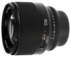

器材库 > 35mm画幅AF定焦镜头 > N T* 85/1.4 Planar

详细规格
镜头类型
中远摄/远摄镜头
发布日期
2002-04-18
厂家推荐价格
178,000.00 （日元）
焦距
83mm
最大光圈
f/1.4
最小光圈
f/22
视角（对角）
28.5
镜头结构
10片/9组
光圈叶片
9片
最近对焦距离
83cm
滤镜口径
82mm
镜头卡口
Contax N
防抖
否
颜色
黑色
尺寸
90×80mm
重量
810g
附件
插刀式金属制遮光罩GB-82（另售）
备注
2002年5月25日上市
清晨的风2009-09-05 22:154.75 分
操作性 4.50耐用性 5.00性价比 4.00解像力 5.00色彩还原 5.00机械结构 5.00
虫虫小飞2007-05-15 21:364.25 分
操作性 2.00耐用性 5.00性价比 5.00解像力 4.00色彩还原 5.00机械结构 4.50
潇洒四郎2006-07-10 11:404.83 分
操作性 5.00耐用性 4.50性价比 4.50解像力 5.00色彩还原 5.00机械结构 5.00
产品图 / 样片
外观图